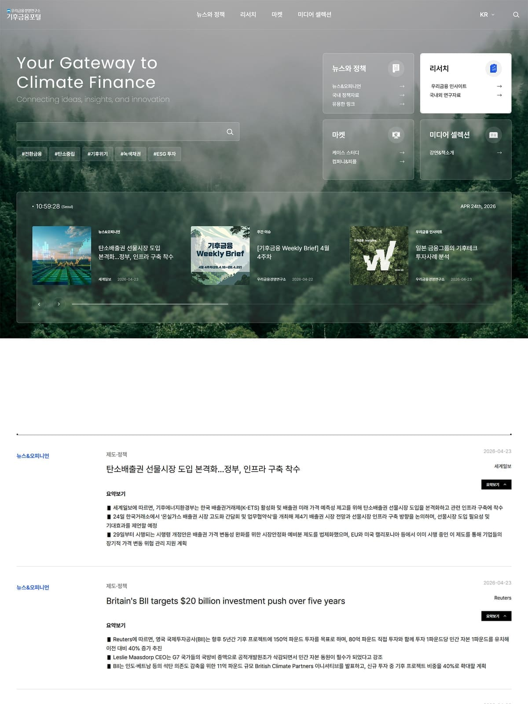
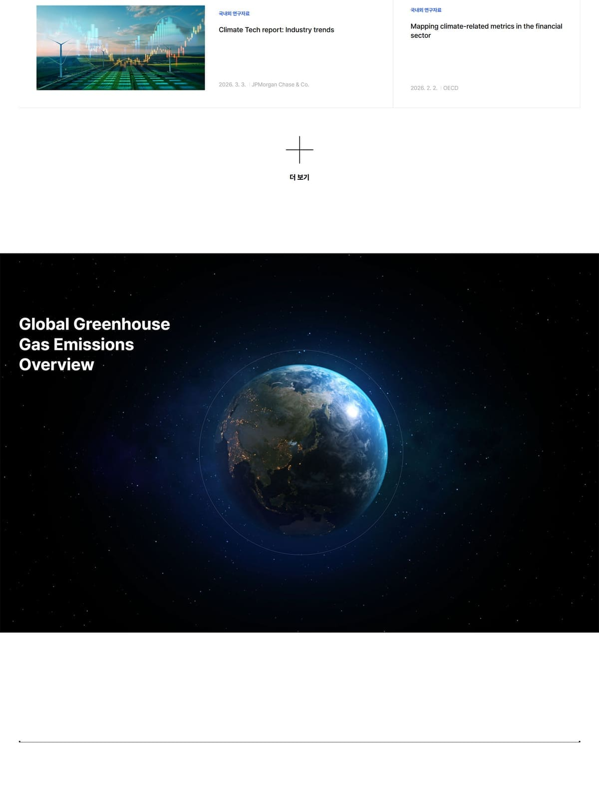
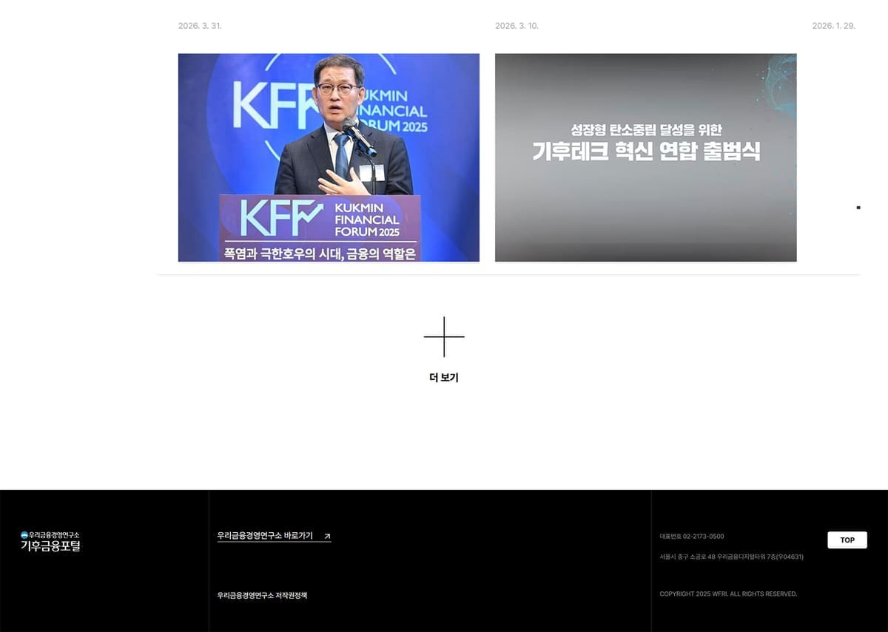
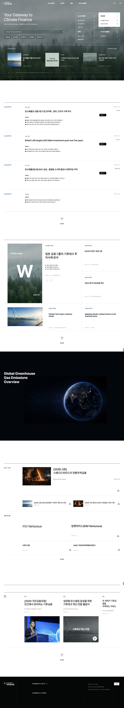
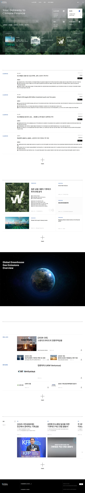

›
금융 관련 GDWEB 디자인을 찾아서 작품별 구현 명세서를 만들어줘
/web-design 금융
금융 관련 GDWEB 디자인을 찾아서 작품별 구현 명세서를 만들어줘



--ink #111714
--blue #1464C0
--paper #FFFFFF
--line #DFE3E1
≤900px mobile navigation, single-column feed, compact content grids
≤520px 18px gutters, 610px hero, 44px minimum touch targets

